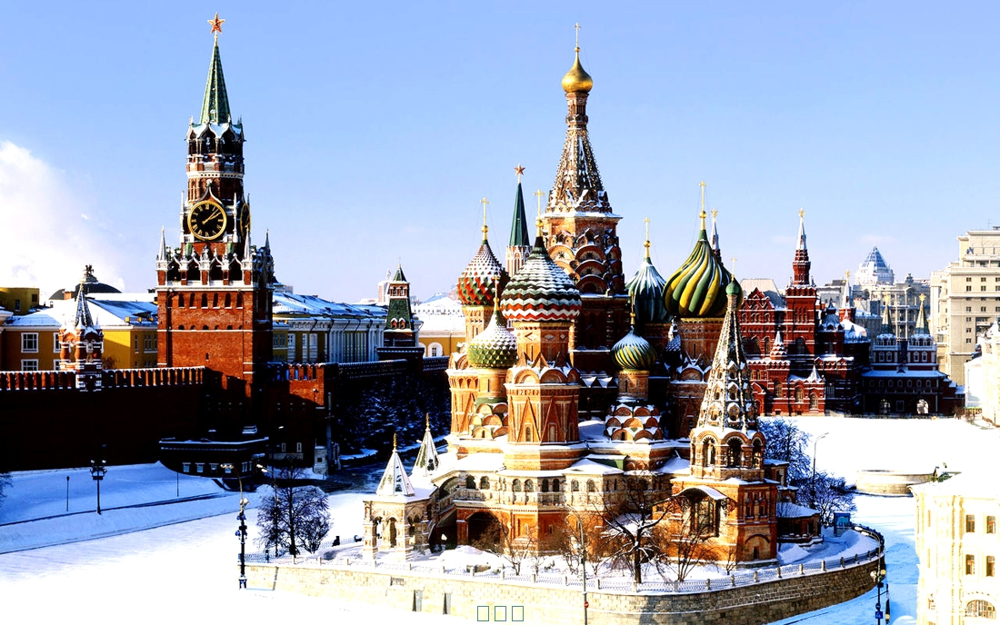

1. Overview of Russia The Russian Federation, abbreviated as Russia or the Russian Federation, is a capitalist country and the largest country in the world by area, spanning both Eurasia and bordering multiple countries. Its extensive coastline stretches from the Arctic Ocean to the North Pacific, including the inland seas, the Black Sea, and the Caspian Sea. As a major republic of the former Soviet Union, the Russian Federation possesses...

1. Overview of RussiaThe Russian Federation, abbreviated as Russia or the Russian Federation, is a capitalist country and the largest country in the world by area, spanning both Eurasia and bordering multiple countries. Its coastline stretches from the Arctic Ocean all the way to the North Pacific, and also includes the inland seas, Black Sea, and Caspian Sea. As a major former Soviet republic, the Russian Federation wields considerable global influence, especially within the CIS organization, which consists of 10 former Soviet republics. In 1991, the Soviet Union dissolved, and Russia succeeded the Soviet Union as a permanent member of the United Nations Security Council, holding veto power over Security Council proposals. Today, Russia is an internationally recognized global power, the world's second-largest military power, and has become the world's largest exporter of natural gas and the largest crude oil exporter outside OPEC.
2. Russian history
The ancestors of Russians were the Rus tribe of the East Slavs. At the end of the 15th century, Grand Prince Ivan III established a centralized state—the Grand Duchy of Moscow. In 1547, Ivan IV proclaimed himself "Tsar" and named his country Russia. In February 1861, Russia abolished agrarian rights. In 1898, the Russian Social Democratic Labour Party (predecessor of the Soviet Communist Party) was established. Under its leadership, the Russian workers and peasants, after the First Russian Revolution in 1905 and the bourgeois democratic revolution (the February Revolution) that overthrew the Romanov dynasty in February 1917, achieved a great victory in the October Socialist Revolution on November 7, 1917, establishing the Russian Soviet Federative Socialist Republic. On June 12, 1990, the First People's Congress of the Russian Federation adopted the "Declaration of State Sovereignty of the Russian Federation." On December 25, the Supreme Soviet of the Russian Soviet Federative Socialist Republic decided to change the country's official name to "Russian Federation" (abbreviated as Russia). On April 16, 1992, the 6th Congress of the Russian People's Congress decided to change the country's name to "Russia"; On the 17th, it was finally decided to use two official names of equal status: "Russian Federation" and "Russia."
3. Russian politics
The Russian Federation practices federal democracy. Based on the Constitution and laws of the Russian Federation, it exercises its functions according to the principle of separation of legislative, judicial, and executive powers, with mutual checks and balances. The president is the head of state, serving a four-year term; the constitutional amendment in 2008 changed it to six years and is elected directly by the people. The president holds considerable executive power and has the authority to appoint senior officials, including the prime minister, but this must be approved by parliament. The president is also the head of the armed forces and chairman of the National Security Council. He can issue decrees directly without parliamentary approval. The president cannot serve more than two consecutive terms.
4. Russian geography
Russia is located in eastern Europe and northern Asia, with most of its territory being the Eastern European Plain. It borders the Arctic Ocean to the north, the Pacific Ocean to the east, the Atlantic Ocean to the west, and the Gulf of Finland in the Baltic Sea to the northwest. The country with the largest territory in the world: 17.0752 million square kilometers (76% of the Soviet Union's total area of 22 million square kilometers), ranking first globally. Its east-west length is 9,000 kilometers, and its north-south width is 4,000 kilometers. Land neighbors include Norway and Finland to the northwest, Estonia, Latvia, Lithuania, Poland, and Belarus to the west, Ukraine to the southwest, Georgia, Azerbaijan, and Kazakhstan to the south, and China, Mongolia, and North Korea to the southeast. To the east, it faces Japan and the United States across the sea. Its coastline is 37,653 kilometers long.
5. The Russian economy
Russia is a major economic power in the world. During the Soviet era, it was the world's second strongest economy. After the collapse of the Soviet Union, its economy experienced a severe downturn. After 2000, Russia's economy developed rapidly through large-scale resource sales. In 2006, Russia's total economic output surpassed that of before its 1990 collapse. In 2007, Russia's GDP reached $1,135.6 billion, ranking tenth in the world. In 2010, Russia's GDP at exchange rates was $1.4769 trillion, with per capita GDP around $10,000. Russia's economic structure is very unreasonable, with the vast majority of income coming from resource sectors including oil, natural gas, ores, and timber, which are greatly affected by price fluctuations of these commodities.
6. Russian culture
Russian territory spanned Eurasia, blending Eastern and Western cultures. Kievan Rus culture can be regarded as a medieval cultural tradition. It had the following characteristics: the pace of cultural development was very slow, and it was greatly influenced by the experiences and traditions of previous generations. Locality and isolation. At that time, under the influence of natural economic conditions, various regions were relatively isolated and lacked economic connections. They were strongly influenced by Christianity and other religious rituals. Although the cultural development model of ancient Russia differed from that of Western European countries, they generally remained consistent.
7. Russian Education
Russia's current cultural penetration rate is 99.4%. Russia has 519 higher education institutions and 48 universities, with 3 million students studying there. Due to the Russian government's emphasis on science and technology, medicine, mathematics, natural sciences, space, and aviation disciplines are highly developed. Currently, 685 government higher education institutions in Russia have been recognized by the government. Additionally, 619 non-governmental higher education institutions have obtained educational qualifications, of which 367 have been recognized by the Russian government over the past few decades. Therefore, there are a total of 1,304 higher education institutions in Russia, of which 1,162 have received government recognition.
俄罗斯联邦，简称俄罗斯或俄联邦，是资本主义国家，是世界上面积最大的国家，地域跨越欧亚两个大洲，与多个国家接壤。绵延的海岸线从北冰洋一直伸展到北太平洋，还包括了内陆海黑海和里海。作为前苏联的主要加盟共和国，俄罗斯联邦具有相当的全球影响力，特别是在由10个前苏联加盟共和国组成的独联体组织内。1991年，苏联解体，俄罗斯继承苏联，成为联合国安全理事会常任理事国，对安理会议案拥有否决权。今日的俄国是一个受国际承认的的世界性大国，亦是世界第二军事强国，也已成为全球最大的天然气出口国及OPEC以外最大的原油输出国。
2. 俄罗斯历史
俄罗斯人的祖先为东斯拉夫人罗斯部族。公元15世纪末，大公伊凡三世建立了中央集权制国家——莫斯科大公国。1547年，伊凡四世自封为“沙皇”，其国号称俄国。1861年2月俄国废除农权制。1898年成立了俄国社会民主工党（苏联共产党前身），在它的领导下，俄国工农群众经过1905年第一次俄国革命和1917年2月推翻罗曼诺夫王朝的资产阶级民主革命（即二月革命），于1917年11月7日取得了十月社会主义革命的伟大胜利，建立了俄罗斯苏维埃联邦社会主义共和国。1990年6月12日，俄罗斯联邦第一次人代会通过《俄罗斯联邦国家主权宣言》。12月25日，俄罗斯苏维埃联邦社会主义共和国最高苏维埃决定，将国家正式名称改为“俄罗斯联邦”（简称俄罗斯）。1992年4月16日，俄罗斯第6次人代会决定将国名改为“俄罗斯”；17日，最后决定使用两个同等地位的正式国名“俄罗斯联邦”和“俄罗斯”。
3. 俄罗斯政治
俄罗斯联邦实行的是联邦民主制。以俄罗斯联邦宪法和法律为基础，根据立法、司法、行政三权分立又相互制约、相互平衡的原则行使职能。总统是国家元首，任期4年，08年修宪改为6年，由人民直选产生。总统拥有相当大的行政权力，有权任命包括了总理在内的高级官员，但必须经议会批准。总统同时也是武装部队的首领以及国家安全会议的主席。并可以不经议会通过直接颁布法令。总统不可以连任超过2届。
4. 俄罗斯地理
俄罗斯位于欧洲东部和亚洲北部，其欧洲领土的大部分是东欧平原。北邻北冰洋，东濒太平洋，西接大西洋，西北临波罗的海芬兰湾。世界上领土面积最大的国家：1707.52万平方公里（占苏联领土面积（2200万平方公里）的76%），居世界第一位，东西最长为9000公里，南北最宽为4000公里。陆地邻国西北面有挪威、芬兰，西面有爱沙尼亚、拉脱维亚、立陶宛、波兰、白俄罗斯，西南面是乌克兰，南面有格鲁吉亚、阿塞拜疆、哈萨克斯坦，东南面有中国、蒙古和朝鲜。东面与日本和美国隔海相望。海岸线长37653公里。
5. 俄罗斯经济
俄罗斯是世界经济大国。苏联时期它是世界第二经济强国。苏联解体后其经济一度严重衰退。2000年之后俄罗斯的经济在大量出售资源的情况下得以迅速发展。2006年俄罗斯的经济总量超过1990年解体前。2007年俄罗斯的国内生产总值达到11356亿美元，位居世界第十位。俄罗斯2010年按汇率计算，GDP总量为1.4769万亿美元，人均GDP1万美元左右。俄的经济结构非常不合理，绝大部分收入来自于资源行业，包括石油、天然气、矿石和木材等，受这类商品价格的波动影响非常大。
6. 俄罗斯文化
俄领土跨越欧亚两洲，融合了东西方两种文化。基辅罗斯文化可被称作为一种中世纪文化传统。它具有以下特征：文化发展速度很慢，其受上一代人的经验和传统影响很大。局部性，封闭性。当时在自然经济的条件影响下各地之间的相对孤立的，缺乏经济联系。受基督教以及其他宗教仪式很强的影响。虽然古俄罗斯文化发展模式与西欧各国不尽相同，但是它们却始终在大体上保持着一致。
7. 俄罗斯教育
俄罗斯目前的文化普及率是99.4%。俄罗斯共有519所高等教育机构和48所大学，共有300万学生在那里学习。由于俄罗斯政府在科学技术上的重视，俄罗斯的医学、数学、自然科学、太空和航空这些学科非常发达。俄罗斯目前一共有685所政府高等教育机构都得到了政府的承认。此外，619所非政府高等教育机构已经拿到了教育的资质，其中367所在过去的几十年中已经被俄罗斯政府所承认。因此，俄罗斯高等教育机构的数量一共是1304个，其中1162个都取得了政府的认可。
English edition. Select 中文原文 to compare with the original Chinese article.
This article is edited and published by Liaoning Overseas Study Service Co., Ltd. The content is for study abroad planning reference only. Unauthorized reproduction is prohibited.
Information on policies, regulations, admissions brochures, and program fees is timely. Please refer to the latest releases from official institutions and institutions in various countries; For detailed verification, please Contact an advisor。